进入Emacs后，在窗口的上部你能看到一个很大的可以在这里进行编辑的工作区域。 （见图1-1）
图1-1 了解Emacs的显示
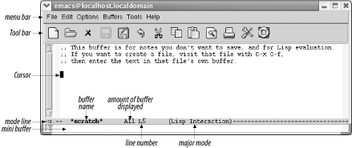
光标显示当前位置。光标也称“插入点”，尤其是对那些对Emacs较熟的人和在线 帮助系统里；因此，有必要记住这个别称。
在打字之前不需要做任何特殊的事，当你开始输入字符，数字和标点的时 候，Emacs将它们插入到缓冲区内。光标表示新字符插入的位置；当输入的时候它 也跟着移动。不同于其他编辑器（尤其是 vi）,Emacs没有针对输入和指令的单独 模式。马上试着输入一些东西，你会发现Emacs是多么容易使用。（如果你被卡住 了，按一下C-g）
1.5.1 工具栏
工具栏是Emacs 21新增的功能。表1.3列举了基本图标和功能。注意工具栏是上下 文相关的，例如在信息模式下阅读Emacs手册，工具栏变成浏览帮助样式。我们会 在介绍相关模式时讨论这些图标。
表1.3 工具栏上的图标
| 图标 | 功能 | 相关章节 |
| 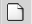 | 打开文件或者创建新文件(要提供文件名) | 本章 |
| 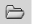 | 打开目录对话框,可以操作文件或目录 | 第5章 |
| 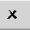 | 关闭当前缓冲区 | 第4章 |
| 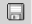 | 保存当前缓冲区到文件 | 本章 |
| 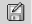 | 保存当前缓冲区到另一个文件 | 本章 |
| 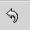 | 撤销 | 第2章 |
| 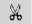 | 剪切选中区域的文本 | 第2章 |
| 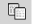 | 复制当前区域的文本 | 第2章 |
| 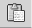 | 粘贴已剪切的或复制的文本 | 第2章 |
| 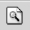 | 查找字符串 | 第3章 |
| 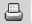 | 打印(包括标题) | 第5章 |
| 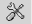 | 自定义选项 | 第10章 |
| 打开在线帮助 | 第14章 |
如果你不喜欢工具栏，可以通过菜单选项将其隐藏（选项 -> 显示/隐藏 -> 工具栏）， 并点击保存选项。更多信息参考第2章最后的2.7节。
1.5.2 菜单
菜单栏包括的选项有：文件，编辑，选项，缓冲区，工具和帮助。你可以打开他 们看看哪些选项是可用的。
为了用鼠标操作菜单，Emacs提供弹出菜单。在Emacs窗口，按住Ctrl键，单击鼠 标右键就可以弹出编辑菜单了。2
如果你的鼠标不能操作菜单，按F10或者M-`(单引号，Tab键的上方，键盘的左上 角儿)来访问菜单。
| 按:F10 |
| 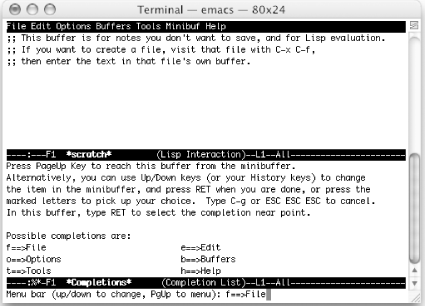 |
| 使用文本格式下的菜单（Mac OS X下的Emacs） |
你可以按以下三种方式选择文本格式下的菜单选项：
当你选择了菜单选项，相应的功能就会出现，重复操作直到找到你想要的选项。
1.5.3 模式行
在窗口底部的上方一点儿（倒数第二行），Emacs描述很多其当前工作的信息。这 行称为模式行。在模式行开始位置，你能看到当前文件的编码方案；通常你仅能 看到“—”，这表明没有特殊的编码方案。在模式行的左边缘，你能看到两个星 号（**）。这两个星号表明当前编辑的文件已经被修改。如果没做任何修改，星 号就不会出现。后面，Emacs显示出当前编辑的缓冲区的名称（*scratch*）.接 着，Emacs显示你当前所在的缓冲区位置—你所处的相对位置，以及当前行（在图 1-1中：L5表示第5行）。如果处于文章的起始处，Emacs显示Top；如果在末尾， 则显示Bot；如果在文章的中部，则显示百分比（例如：50%表示你位于文章的正 中间）；如果全文都显示出来了，则显示ALL。后面的括号里显示的编辑模式或你 所处的模式。本例中Lisp互动模式是主模式（没有启用副模式）。滚动条也显示 出你当前在文件中所处的位置。3
你经常会同时在多个缓冲区中工作。这样，每个缓冲区有其自己的模式行，当切 换缓冲区后，模式行会显示当前缓冲区的状态。现在不用对此有所担心，只 要记住每个缓冲区都有一个描述它的信息的模式行。
1.5.4 迷你缓冲区
在模式行下面是迷你缓冲区。它显示你输入的指令，你要找的文件名，要查找替 换的值等等。也用于显示错误信息。如果你发现你卡在了迷你缓冲区，按“C-g” 离开。
2. Emacs 很适合三键鼠标（更多的键也没问题）。你也可以用键盘来访问菜单。 键盘指令比菜单更有效率，但是为了介绍的完整性，我们还是要向你介绍如 何使用文本格式的菜单。如果你喜欢用鼠标操作Emacs但是只访问文本界面， 参考第13章如何下载安装Unix，Linux，Mac OS或者WIndows图形界面下相应 版本的Emacs）。
3. 滚动条的位置依赖于你当前的平台或窗体系统。Linux在左侧显示滚动 条，Mac OS X 和 Windows 默认在右侧显示。注意，在终端窗口中运行 Emacs时，模式行信息显示的顺序也不相同。